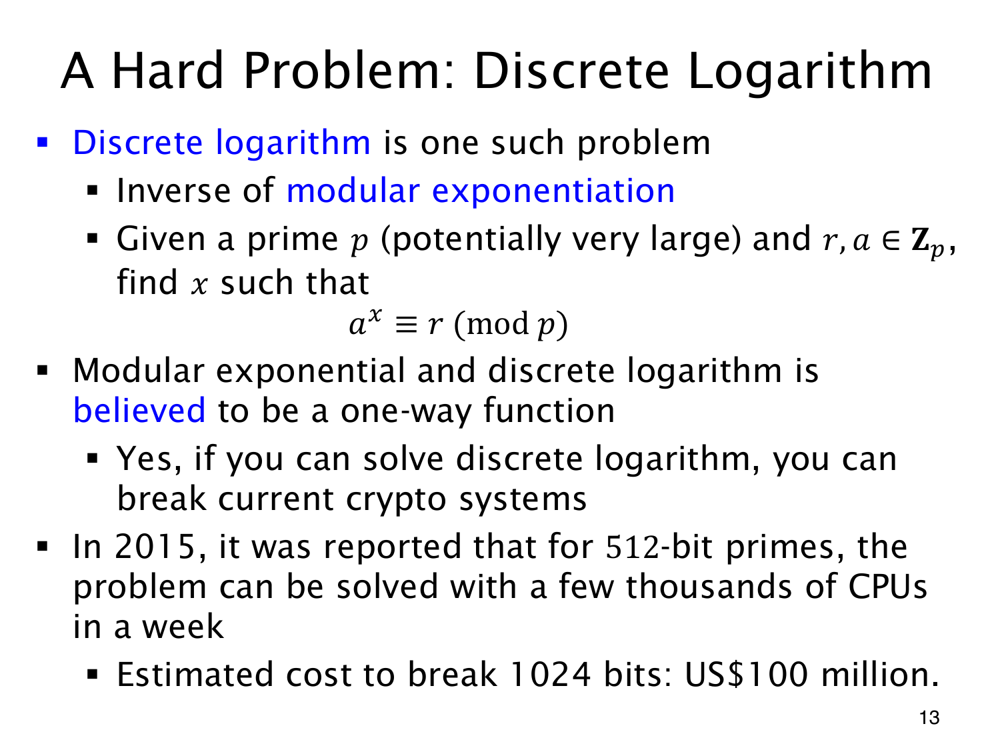

L1.14 · 第 13 页讲解原文
查看这一页课件

反求指数，与求乘法逆元不同
给定 a,x,p，可以高效算 axmodp。若只给 a,r,p，反过来找
ax≡r(modp)
中的 x，就是 discrete logarithm（离散对数）。乘法逆元寻找相乘得 1 的乘数，离散对数寻找指数，问题不同。
密码学通常在合适的乘法群或子群内讨论它：底数非零，目标 r 属于该底数生成的子群，否则可能无解；指数也按底数的周期理解，不是唯一整数。
原页的“believed”保留了困难性假设的含义。对合适参数，反向计算被认为困难；这没有证明所有素数、底数或计算模型下都困难。小参数可枚举，特殊参数也可能容易。高效离散对数算法会威胁依赖该问题的密码系统，不能直接说它破解一切密码。
课件引用的 512 位实验和 1024 位成本属于 2015 年历史描述。这些数字不作为当前硬件性能、费用或安全参数建议；本页用它们说明的是正向与反向计算成本的不对称。